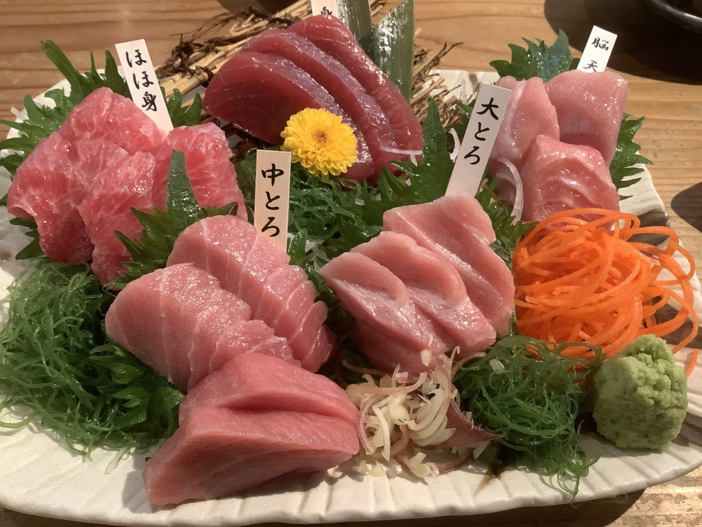
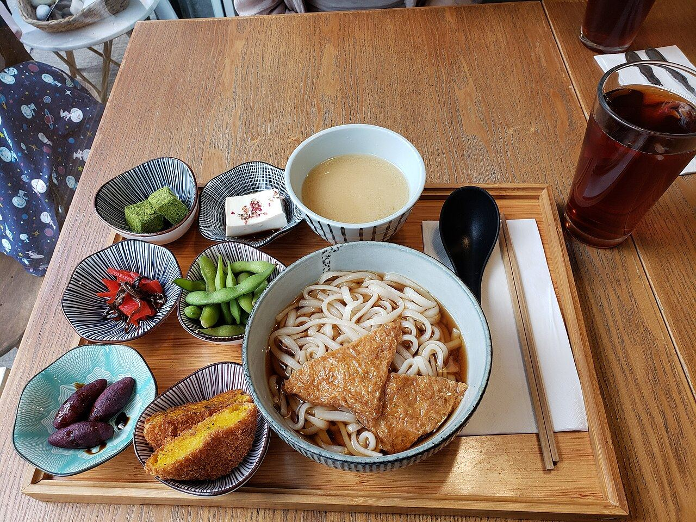
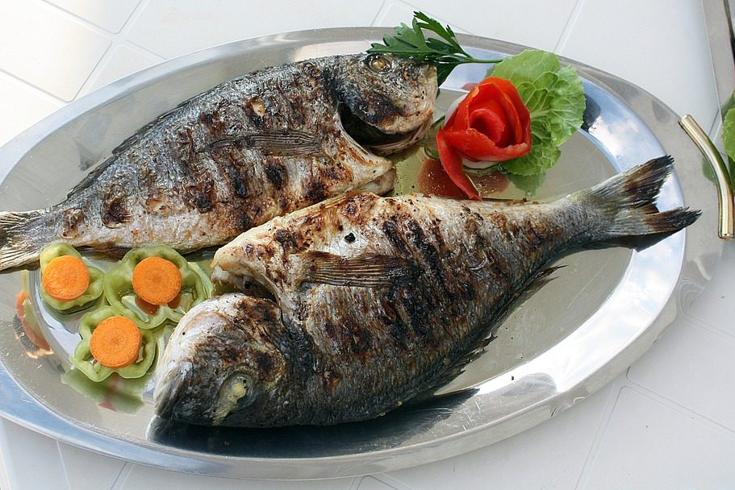
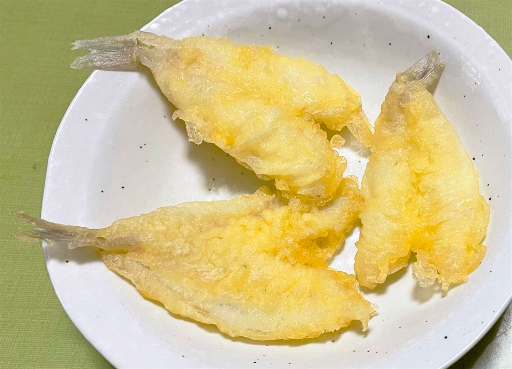
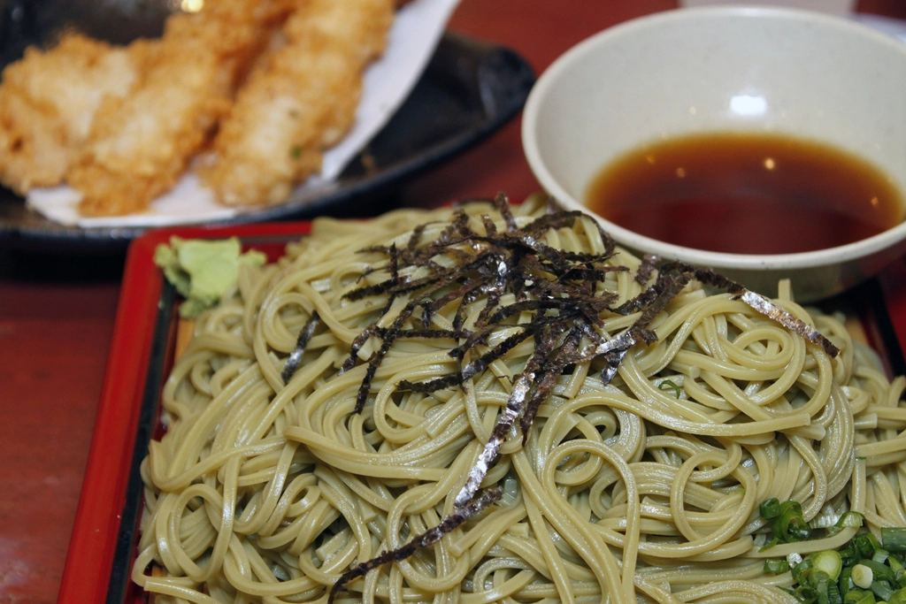
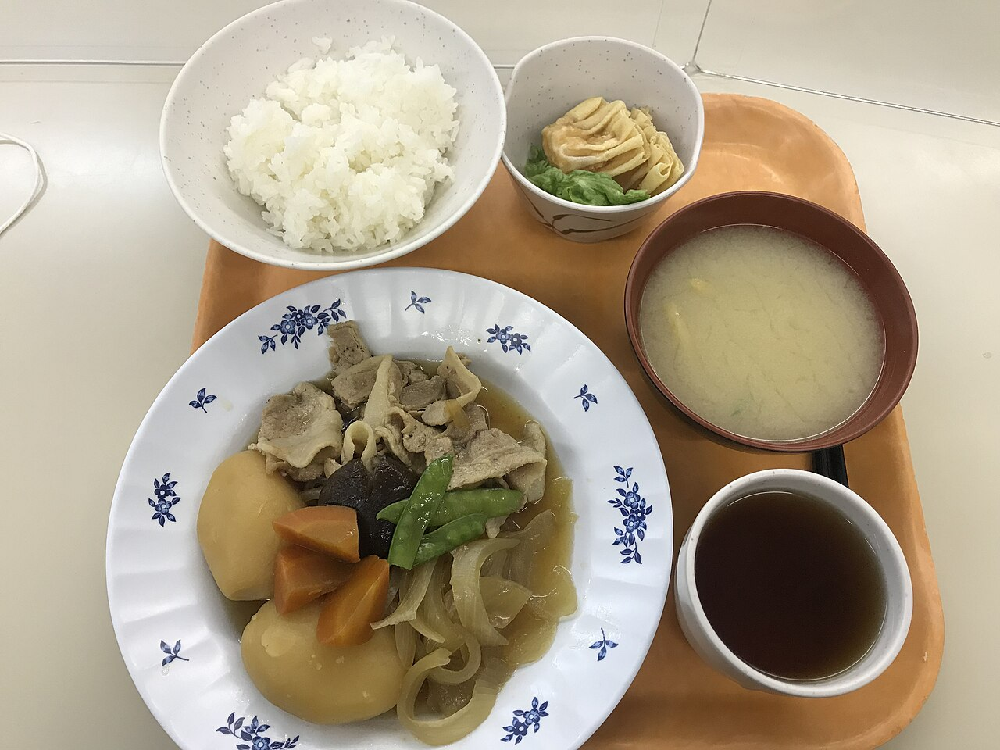

Washoku Kasumi
旬のものを、
やさしい味つけで。
毎日の定食から、ご宴席のお膳まで。
ご挨拶
ほっとする、和食の店です。
カウンター8席と小上がり2卓の、小さな和食店です。魚は毎朝仕入れ、野菜は季節のものを中心にお出ししています。
出汁はその日の朝にとり、味つけは控えめに。お昼の定食から、夜の一杯とお造りまで、気軽にお立ち寄りください。
おすすめ
店の定番

本日のお造り盛り合わせ
その日に届いた魚を、目の前で。
¥1,800
日替わり小鉢定食
主菜に小鉢・ご飯・お味噌汁つき。
¥1,100
旬の焼き魚
炭火でふっくら、香ばしく。
¥1,300
GALLERY
店のようす





営業案内
ご来店をお待ちしています
- ランチ
- 11:30〜14:30(L.O. 14:00)
- 夜
- 17:30〜21:30(L.O. 21:00)
- 定休日
- 水曜
- 席数
- カウンター8席・小上がり2卓